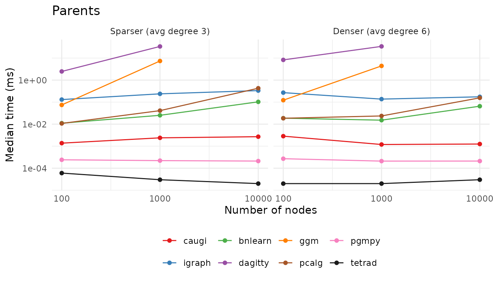
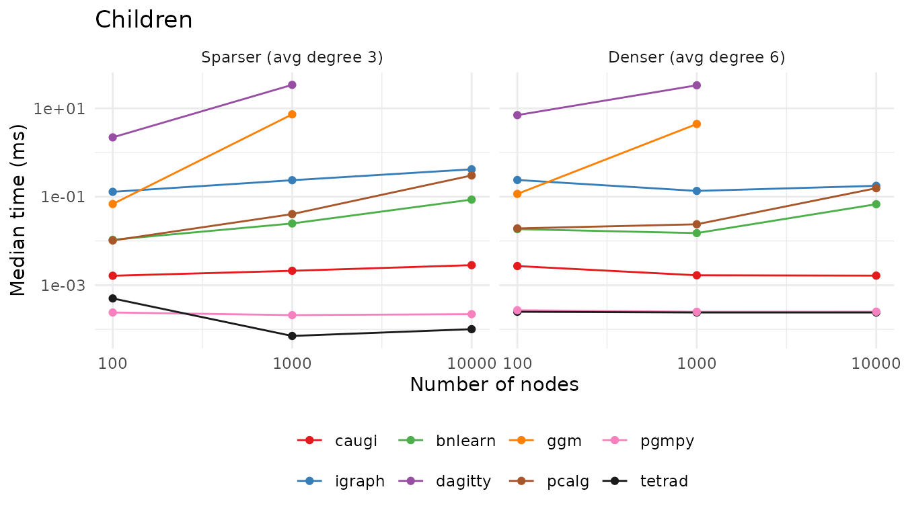
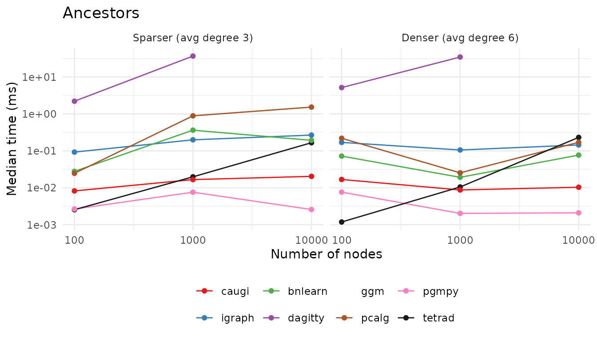
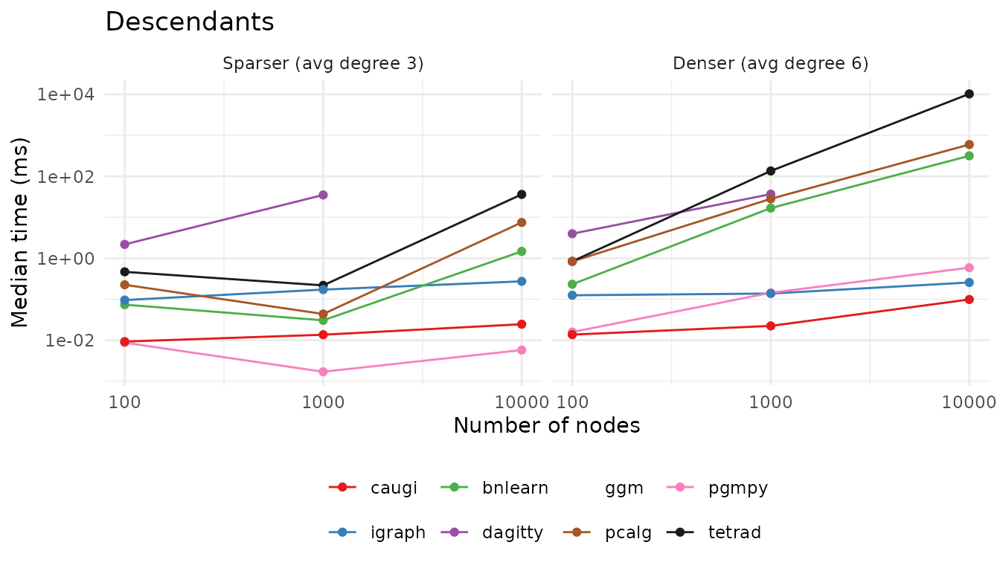
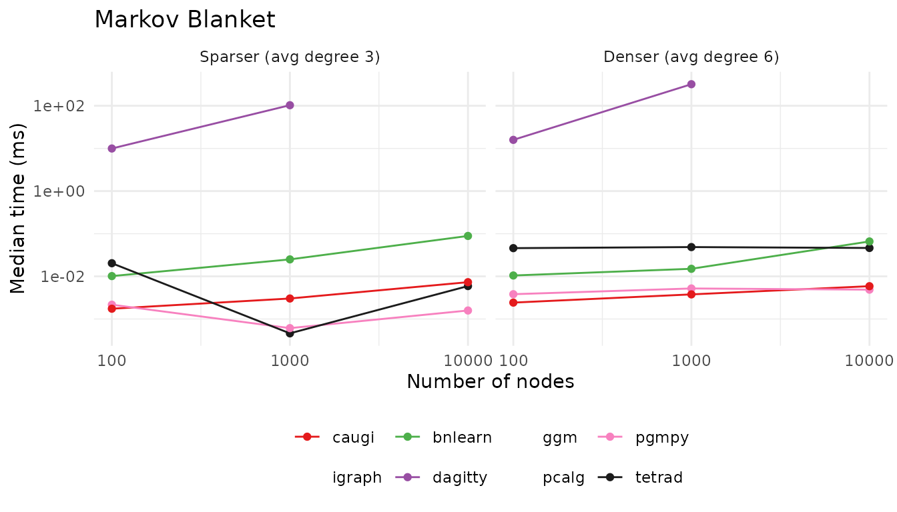
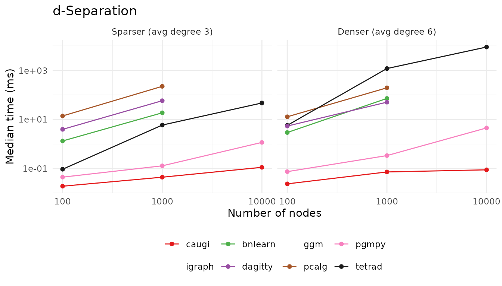
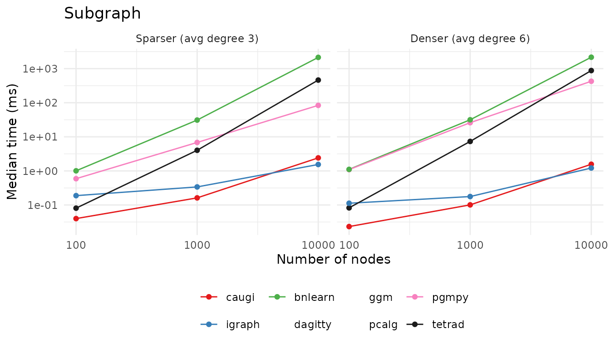

This vignette compares the performance of caugi against
R packages (igraph, bnlearn, dagitty, ggm, pcalg), the
Python package pgmpy, and
the Java library Tetrad. We
focus on the practical trade-offs that arise from different core data
structures and design choices.
The headline is: caugi frontloads computation. That is,
caugi spends more effort when constructing a graph and
preparing indexes, so that queries are wicked fast. The high performance
is also due to the Rust backend.
A note on Tetrad: it is included as a reference point—the de facto
gold standard implementation in causal discovery—but the comparison is
not strictly apples-to-apples, since Tetrad runs on the JVM (compiled
Java) while the R packages and caugi run with R-level
dispatch overhead on every call.
Benchmarks below are precomputed, with the last run on 2026-06-17T10:37:16+0200 on host terra (Linux).
Versions:
- caugi 1.2.0.9000
- igraph 2.2.2
- bnlearn 5.1
- dagitty 0.3.4
- ggm 2.5.2
- pcalg 2.7.12
- pgmpy 1.1.2
- Tetrad 7.6.10.
Design Choices
Compressed Sparse Row (CSR) Representation
The core data structure in caugi is a compressed sparse
row (CSR) representation of the graph. CSR representations store, for
each vertex, a contiguous slice of neighbor IDs with a pointer (offset)
array that marks the start and end of each slice. This format is
memory-efficient for sparse graphs. The caugi graph object
also stores important query information directly, allowing parent,
child, and neighbor queries to be done in
time. This yields a larger memory footprint, but the trade-off is that
queries are extremely fast.
Mutation and Lazy Building
The caugi graph objects are expensive to build. This is
the performance downside of using caugi. Each time we make
a modification to a caugi graph object, we need to rebuild
the graph completely since the graph object is immutable by design. This
has complexity
,
where
is the vertex set and
is the edge set.
However, the graph object will only be rebuilt when the user either
calls build() directly or queries the graph. Therefore, you
do not need to worry about wasting compute time by iteratively making
changes to a caugi graph object, as the graph rebuilds
lazily when queried. By doing this, caugi graphs
feel mutable, but, in reality, they are not.
By doing it this way, we ensure
- that the graph object is always in a consistent state when queried and
- that queries are as fast as possible,
while keeping the user experience smooth.
Comparison
The comparison covers seven operations across a parameter grid of graph sizes and edge densities. All packages run on the same generated DAG fixtures so query results are directly comparable.
The grid covers
at two density levels, parametrized by the average
in-degree
(equivalently the average out-degree, or total edges divided by number
of nodes). We sample DAGs with per-edge probability
,
which makes the expected in-degree exactly
regardless of
.
The grid uses
for the sparser cells and
for the denser ones, so a node has on average
(or
)
parents and
(or
)
children, with edge counts that grow linearly with
.
The slowest packages (dagitty, ggm, plus
bnlearn::dsep and pcalg::dsep) are skipped at
via the skip table in spec.json; the affected
lines simply end at
.
Relational Queries
Direct neighbor lookups (parents, children)
are
for caugi, igraph, bnlearn, and
Tetrad—they all maintain adjacency tables. pgmpy is a thin
wrapper over NetworkX’s predecessor/successor lookups.
pcalg and ggm scan a row or column of the
adjacency matrix on each call
(),
with ggm paying noticeably more R-level overhead.
dagitty is the outlier: it re-derives neighbors from its
string DSL representation each call and pays a linear-in-edges cost.
bench_parents <- function(graphs, fx) {
v <- fx$test_node
v_idx <- match(v, graphs$nodes)
calls <- list(
caugi = bquote(caugi::parents(graphs$cg, .(v))),
igraph = bquote(igraph::neighbors(graphs$ig, .(v), mode = "in")),
bnlearn = bquote(bnlearn::parents(graphs$bn, .(v))),
dagitty = bquote(dagitty::parents(graphs$dg, .(v))),
ggm = bquote(ggm::pa(.(v), graphs$am)),
pcalg = bquote(pcalg::searchAM(graphs$amat_pag, .(v_idx), type = "pa"))
)
run_bench(calls, "parents", fx)
}
bench_children <- function(graphs, fx) {
v <- fx$test_node
v_idx <- match(v, graphs$nodes)
calls <- list(
caugi = bquote(caugi::children(graphs$cg, .(v))),
igraph = bquote(igraph::neighbors(graphs$ig, .(v), mode = "out")),
bnlearn = bquote(bnlearn::children(graphs$bn, .(v))),
dagitty = bquote(dagitty::children(graphs$dg, .(v))),
ggm = bquote(ggm::ch(.(v), graphs$am)),
pcalg = bquote(pcalg::searchAM(graphs$amat_pag, .(v_idx), type = "ch"))
)
run_bench(calls, "children", fx)
}
As you can see from the plots, Tetrad is fastest (sub-microsecond),
with pgmpy and caugi close behind; all three
stay flat as
grows, as do igraph and bnlearn. The cost of
pcalg’s
row scan, hidden at small
,
becomes visible by
,
where it climbs to a few tenths of a millisecond. ggm and
dagitty pay the most for re-deriving neighbors on every
call: by
they are already one to two orders of magnitude slower than the rest,
and both are skipped at
(their lines simply stop). For the front-runners the absolute times are
tiny and the gaps between them mostly reflect dispatch overhead
differences between Python, R, and Java rather than anything that
matters in practice.
Ancestors and Descendants
These require transitive closure (BFS/DFS over the directed graph).
Here caugi’s CSR pays off—both forward and reverse
adjacency are precomputed, so traversal is tight pointer-chasing in
Rust.
bench_ancestors <- function(graphs, fx) {
v <- fx$test_node
v_idx <- match(v, graphs$nodes)
calls <- list(
caugi = bquote(caugi::ancestors(graphs$cg, .(v))),
igraph = bquote(igraph::subcomponent(graphs$ig, .(v), mode = "in")),
bnlearn = bquote(bnlearn::ancestors(graphs$bn, .(v))),
dagitty = bquote(dagitty::ancestors(graphs$dg, .(v))),
pcalg = bquote(pcalg::searchAM(graphs$amat_pag, .(v_idx), type = "an"))
)
run_bench(calls, "ancestors", fx)
}
bench_descendants <- function(graphs, fx) {
v <- fx$test_node
v_idx <- match(v, graphs$nodes)
calls <- list(
caugi = bquote(caugi::descendants(graphs$cg, .(v))),
igraph = bquote(igraph::subcomponent(graphs$ig, .(v), mode = "out")),
bnlearn = bquote(bnlearn::descendants(graphs$bn, .(v))),
dagitty = bquote(dagitty::descendants(graphs$dg, .(v))),
pcalg = bquote(pcalg::searchAM(graphs$amat_pag, .(v_idx), type = "de"))
)
run_bench(calls, "descendants", fx)
}
caugi is the most consistent here: sub-millisecond on
every fixture for both ancestors and descendants, and barely moving as
grows. igraph::subcomponent() and pgmpy’s
NetworkX-backed traversal also stay fast across the grid. Descendants on
the dense
fixture is where the design differences blow up: Tetrad takes about ten
seconds, while pcalg and bnlearn
reach several hundred milliseconds—caugi finishes the same
query in roughly a tenth of a millisecond, a five-orders-of-magnitude
gap to Tetrad. dagitty is again one to two orders of
magnitude slower than the front-runners on the sizes it can handle,
paying its DSL-reparsing cost on every call, and is skipped at
.
Markov Blanket
The Markov blanket of a node
is parents(v) ∪ children(v) ∪ parents(children(v)).
caugi, bnlearn, and Tetrad have direct
accessors backed by adjacency tables; dagitty re-derives it
from its DSL representation each call; pgmpy walks NetworkX
edges. pcalg and ggm do not expose a
Markov-blanket helper and are omitted.
bench_markov_blanket <- function(graphs, fx) {
v <- fx$test_node
calls <- list(
caugi = bquote(caugi::markov_blanket(graphs$cg, .(v))),
bnlearn = bquote(bnlearn::mb(graphs$bn, .(v))),
dagitty = bquote(dagitty::markovBlanket(graphs$dg, .(v)))
)
run_bench(calls, "markov_blanket", fx)
}
caugi, pgmpy, and bnlearn all
resolve Markov blankets in microseconds across the entire grid, and
Tetrad stays well under a millisecond too. dagitty is the
outlier, climbing into the hundreds of milliseconds on the dense
fixture because it re-derives the blanket from its DSL representation on
every call; it is skipped at
.
D-Separation
For each fixture we pick a random (X, Y) pair and
compute a minimal d-separator Z with
caugi::minimal_separator()—that is, a smallest set of nodes
whose conditioning blocks every path between X and
Y in the DAG. The same triple (X, Y, Z) is
then passed to every package’s d-separation routine, so every package
answers “is X ⫫ Y | Z?” on identical inputs. Tetrad uses
the m-separation generalisation (equivalent on DAGs).
pcalg::dsep() follows Lauritzen’s moralization-based test
on a graphNEL.
bench_dsep <- function(graphs, fx) {
if (is.null(fx$dsep)) {
return(NULL)
}
x <- fx$dsep$x
y <- fx$dsep$y
z <- unlist(fx$dsep$z)
calls <- list(
caugi = bquote(caugi::d_separated(graphs$cg, .(x), .(y), .(z))),
bnlearn = bquote(bnlearn::dsep(graphs$bn, .(x), .(y), .(z))),
dagitty = bquote(dagitty::dseparated(graphs$dg, .(x), .(y), .(z))),
pcalg = bquote(pcalg::dsep(.(x), .(y), .(z), graphs$gNEL))
)
run_bench(calls, "d_separated", fx)
}
caugi is the clear winner here, staying near a tenth of
a millisecond on every fixture, including the dense
graph. pgmpy is the runner-up, within a few milliseconds
throughout. This is the one operation where Tetrad’s compiled code does
not save it: its m-separation routine explores paths in a way
that scales badly on dense graphs, reaching over a second at
and roughly nine seconds at
—a
striking example of an algorithmic choice dominating the language
advantage. Among the R packages, bnlearn and
pcalg pay to build a moralized graph on each call
(pcalg into the hundreds of milliseconds at
,
slowest of the three R competitors), and dagitty re-parses
its DSL; all three are skipped at
.
Subgraph Extraction
Subgraph extraction is where we explicitly test graph
building performance. For caugi we time
subgraph(cg, nodes) |> build() together so the CSR
rebuild cost is captured. igraph, bnlearn,
pgmpy, and Tetrad all return adjacency-backed subgraphs
without an analogous index rebuild step. pcalg exposes no
native subgraph constructor (users typically call
graph::subGraph() on the underlying graphNEL),
so it is omitted here.
bench_subgraph <- function(graphs, fx) {
sub <- unlist(fx$subgraph_nodes)
calls <- list(
caugi = bquote({
sg <- caugi::subgraph(graphs$cg, .(sub))
caugi::build(sg)
}),
igraph = bquote(igraph::subgraph(graphs$ig, .(sub))),
bnlearn = bquote(bnlearn::subgraph(graphs$bn, .(sub)))
)
run_bench(calls, "subgraph", fx)
}
caugi and igraph are the only packages that
stay in the low-single-digit milliseconds at
(around 1-2 ms). The two run neck-and-neck: caugi is ahead
at
and
,
while igraph edges it out on the largest fixture—remarkably
close given that caugi pays for a full CSR rebuild on every
call. Everyone else is one to three orders of magnitude slower on the
largest fixtures, copying nodes and edges into a fresh object each call:
pgmpy reaches tens to hundreds of milliseconds, Tetrad
several hundred, and bnlearn over two seconds. The takeaway
is that even though caugi graphs are nominally expensive to
construct, the rebuild after subgraph() is fast enough to
beat adjacency-list constructors that rebuild no indexes at all.
Summary
Across the seven operations, caugi either leads or sits
in the leading group:
- It matches or beats
igraphandbnlearnon the adjacency lookups (parents,children, Markov blanket). - It is the fastest R package by a wide margin on transitive-closure
operations (
ancestors,descendants, d-separation), where the CSR’s precomputed forward and reverse adjacency pays off. - Even on
subgraph(), where the CSR has to be rebuilt, it stays in the low-single-digit milliseconds at (matched only byigraph), whilebnlearn,pgmpy, and Tetrad reach hundreds of milliseconds to seconds.
The most striking pattern emerges at
:
caugi is the only package that stays fast across
every operation. Tetrad (compiled Java) and pgmpy
(NetworkX-backed) beat caugi on the simplest lookups by a
small constant factor, which is unsurprising given the R-level dispatch
overhead caugi pays on every call. But several competitors
either run out of room (dagitty, ggm, and the
moralization-based d-separation tests are too slow to include at
)
or collapse on specific operations. Tetrad in particular, despite being
compiled, takes seconds on dense descendants and d-separation queries
because of how those routines scale, not because of the language.
The headline holds: by frontloading work into the build step and
querying a CSR-backed structure, caugi keeps query times
effectively constant in graph size for the operations users hit most
often. The price is paid up front, in the rebuild step that runs lazily
on the first query after a mutation.
Reproducing These Benchmarks
The R benchmark code shown in the chunks above is the actual source:
each chunk has eval = FALSE so the rendered vignette does
not run them, and the wrapper script at tools/benchmark/run_r_bench.R
extracts them with knitr::purl() and sources the result
into the R session.
The full harness lives in tools/benchmark/
and uses Task to orchestrate the
cross-language runners. To reproduce just the R numbers (no Python or
Java toolchains needed):
task r purls the vignette into
tools/benchmark/bench_r.R, runs it, prints a per-package,
per-operation summary, and writes the raw timings to
results/r.csv. Do not edit bench_r.R
directly—change the chunks in this vignette instead. See
tools/benchmark/README.md for the full pipeline
(task all) and per-language details.
Session Info
#> R version 4.6.0 (2026-04-24)
#> Platform: x86_64-pc-linux-gnu
#> Running under: Ubuntu 24.04.4 LTS
#>
#> Matrix products: default
#> BLAS: /usr/lib/x86_64-linux-gnu/openblas-pthread/libblas.so.3
#> LAPACK: /usr/lib/x86_64-linux-gnu/openblas-pthread/libopenblasp-r0.3.26.so; LAPACK version 3.12.0
#>
#> locale:
#> [1] LC_CTYPE=C.UTF-8 LC_NUMERIC=C LC_TIME=C.UTF-8
#> [4] LC_COLLATE=C.UTF-8 LC_MONETARY=C.UTF-8 LC_MESSAGES=C.UTF-8
#> [7] LC_PAPER=C.UTF-8 LC_NAME=C LC_ADDRESS=C
#> [10] LC_TELEPHONE=C LC_MEASUREMENT=C.UTF-8 LC_IDENTIFICATION=C
#>
#> time zone: UTC
#> tzcode source: system (glibc)
#>
#> attached base packages:
#> [1] stats graphics grDevices utils datasets methods base
#>
#> other attached packages:
#> [1] ggplot2_4.0.3
#>
#> loaded via a namespace (and not attached):
#> [1] vctrs_0.7.3 cli_3.6.6 knitr_1.51 rlang_1.2.0
#> [5] xfun_0.59 otel_0.2.0 generics_0.1.4 S7_0.2.2
#> [9] textshaping_1.0.5 jsonlite_2.0.0 glue_1.8.1 htmltools_0.5.9
#> [13] ragg_1.5.2 sass_0.4.10 scales_1.4.0 rmarkdown_2.31
#> [17] grid_4.6.0 tibble_3.3.1 evaluate_1.0.5 jquerylib_0.1.4
#> [21] fastmap_1.2.0 yaml_2.3.12 lifecycle_1.0.5 compiler_4.6.0
#> [25] dplyr_1.2.1 RColorBrewer_1.1-3 fs_2.1.0 pkgconfig_2.0.3
#> [29] htmlwidgets_1.6.4 farver_2.1.2 systemfonts_1.3.2 digest_0.6.39
#> [33] R6_2.6.1 tidyselect_1.2.1 pillar_1.11.1 magrittr_2.0.5
#> [37] bslib_0.11.0 withr_3.0.3 tools_4.6.0 gtable_0.3.6
#> [41] pkgdown_2.2.0 cachem_1.1.0 desc_1.4.3